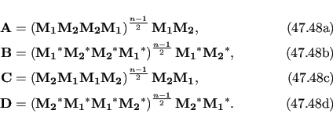
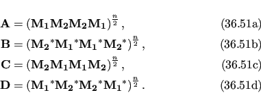

Next: The NS MMQ 3-site Up: The numeric MMQ CPMG Previous: The numeric MMQ CPMG Contents Index
This is the numerical model for 2-site exchange for proton-heteronuclear SQ, ZQ, DQ and MQ CPMG data, as derived in (Korzhnev et al., 2005a,2004a,b). It is selected by setting the model to `NS MMQ 2-site'. The simple constraint pA > pB is used to halve the optimisation space, as both sides of the limit are mirror image spaces. Different sets of equations are used for the different data types.
The basic evolution matrices for single, zero and double quantum CPMG-type data for this model are
 |
(theparentequation.42) |
where MA(0) is proportional to the vector [pA, pB]T and
| (theparentequation.43) |
The evolution matrix A is defined as
| (theparentequation.44) |
where
 |
(theparentequation.45) |
For different data types

 is defined as:
is defined as:

 (15N SQ-type data);
(15N SQ-type data);

 (1H SQ-type data);
(1H SQ-type data);

 -
- 
 (ZQ-type data); and
(ZQ-type data); and

 +
+ 
 (DQ-type data).
(DQ-type data).
The equation for the exchange process for multiple quantum CPMG-type data is
![$\displaystyle \mathrm{R}_\textrm{2eff}= - \frac{1}{T} \log \left\{ Re \left[ \f...
...cdot \begin{pmatrix}p_\textrm{A}\\ p_\textrm{B}\end{pmatrix} \right] \right\},$](img186.png) |
(theparentequation.46) |
where T is the constant time interval, and the matrices A, B, C, and D are dually defined. When n is even, they are defined as
 |
When n is odd, they are defined as
 |
When n is zero, to avoid matrix powers of zero they are defined as
|  |
The M matrices are defined as:
| (theparentequation.50) |
where 2 is the spacing between successive 180o pulses and where
The references for this model are:
is the spacing between successive 180o pulses and where
The references for this model are:
|  |
For the model it is assumed that R2, DQA = R2, ZQA = R2A0 and R2, DQB = R2, ZQB = R2B0. The references for this model are:
More information about the NS MMQ 2-site model is available from:
The relax user manual (PDF), created 2014-02-28.